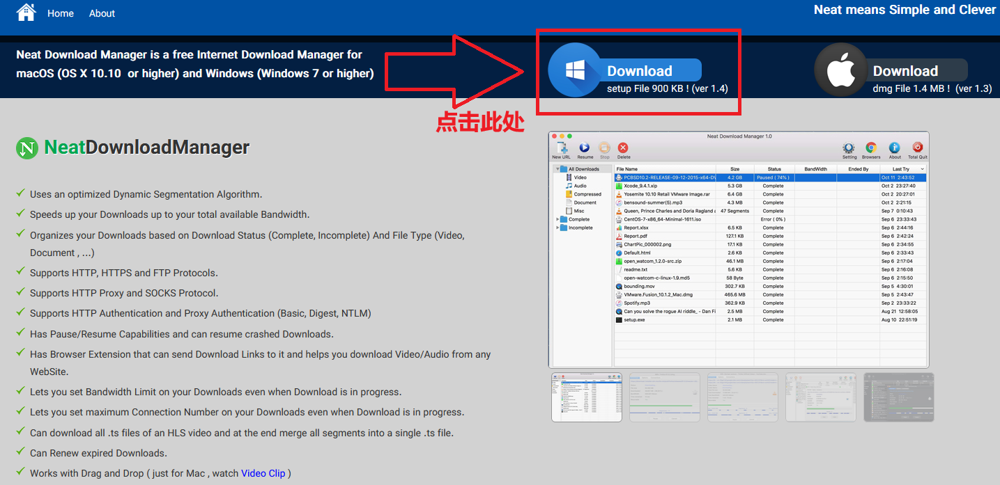
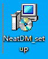
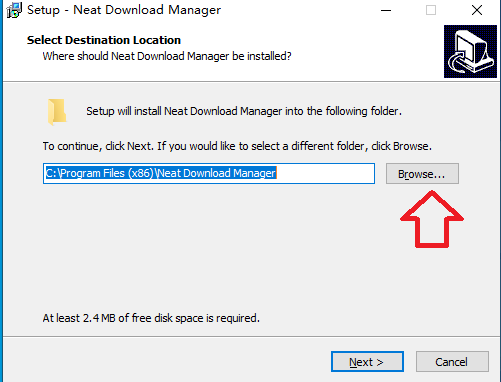
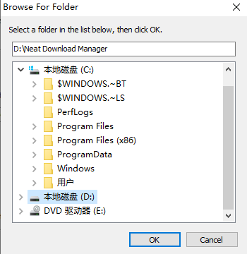
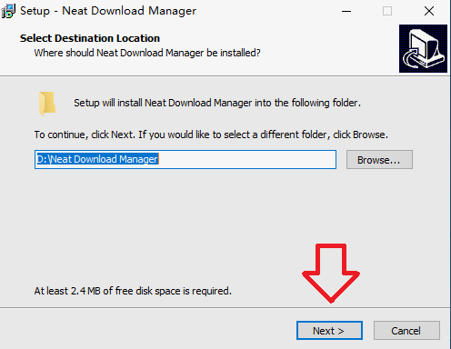
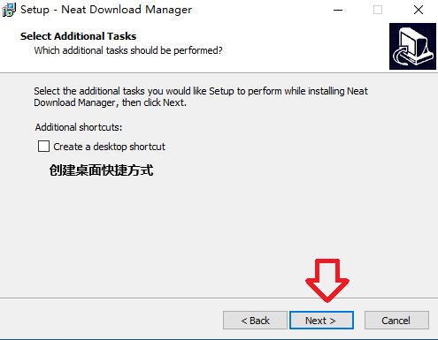
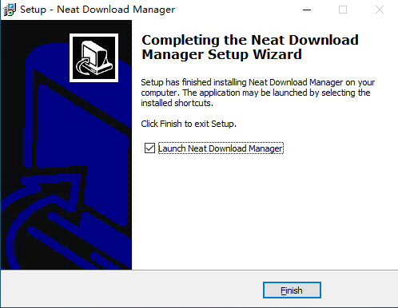
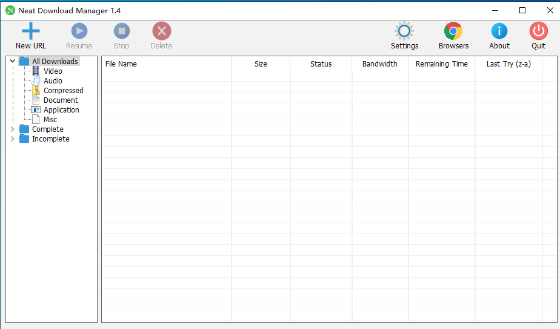
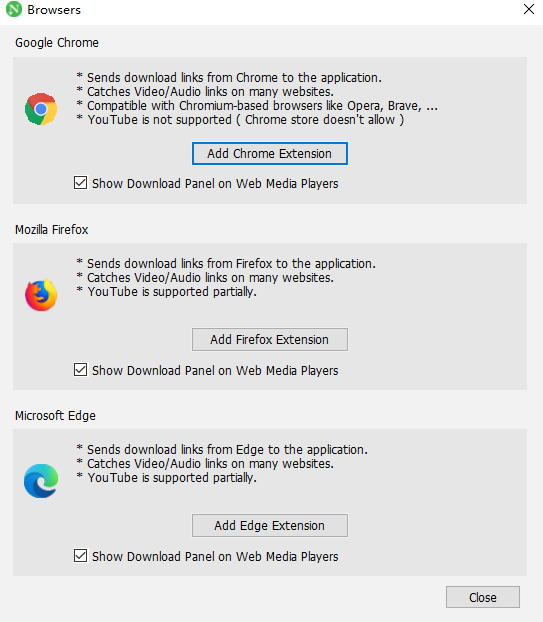

NDM下载器介绍
NDM (Neat Download Manager) 是一款免费、轻量的多线程下载工具，支持 Windows 与 MacOS 系统，功能和 IDM (Internet Download Manager 类似。
软件特色
- 安装包体积小巧，Windows 安装包仅约 900KB；
- 支持 HTTP、HTTPS、FTP 常见下载协议；
- 兼容 HTTP 代理、SOCKS 代理；
- 最高支持 32线程 多线程加速下载；
- 自带断点续传，中断后可恢复下载；
- 免费无广告，轻量化占用资源低。
安装NDM（Windows 教程）
-
访问官方网站下载安装包：NDM官网

-
双击运行下载好的安装包

-
点击 Browse 自定义安装路径，建议安装至D盘



-
按需选择是否创建桌面快捷方式，依次点击
Next、Install

-
等待安装完成后点击
Finish结束安装

-
NDM 主程序界面预览

浏览器配置NDM插件（Edge 为例）
-
打开 NDM 软件，点击顶部
Browsers选项 -
点击
Add Edge Extension自动跳转浏览器扩展商店
-
在 Edge 浏览器中完成添加与授权配置即可使用